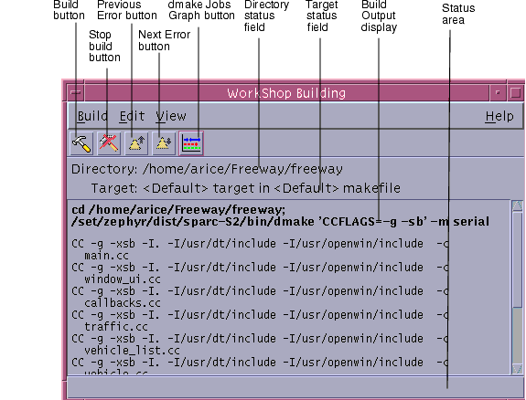
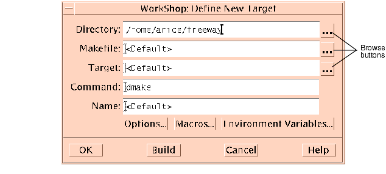
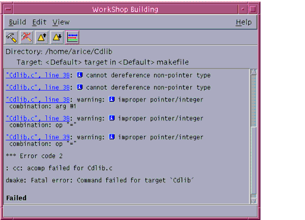
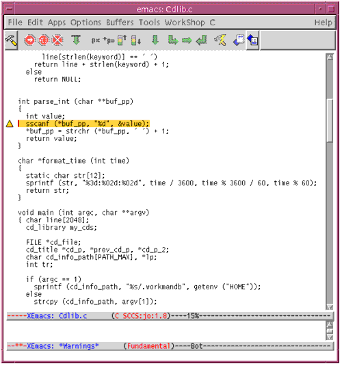

| Sun WorkShop TeamWare User's Guide |
Building Programs in Sun WorkShop TeamWare
Sun WorkShop TeamWare lets you run one build job at a time or several build jobs concurrently. This chapter shows you how to quickly build a single application, how to customize a build, and how to fix build errors using the Building window and the Sun WorkShop editor of your choice. It covers the following topics:
- Building Window
- Building WorkShop Targets
- Building a Program
- Customizing a Build
- Fixing Build Errors
Building Window
The Building window displays information on program compilation. You can open the window by choosing TeamWare
Building in the Configuring window.
Note – This is the same Building tool that you can access from Sun WorkShop. From the Sun WorkShop main window, choose Windows
From the Building window, you can:
- Start a build
- Stop a build in progress
- Edit build parameters
- Save the build output to another file
- View build errors
FIGURE 9-1 shows the Building window.

FIGURE 9-1 Building WindowTABLE 9-1 describes the components of the Building window:
Building WorkShop Targets
When building in the Sun WorkShopTM programming environment, two types of targets are involved: Sun WorkShop targets and user Makefile targets.
Sun WorkShop Targets
- A Sun WorkShop target is an object derived from the build directory, the build command, the makefile, and the make target:
- Build directory -- The directory from which the build process is invoked and also the default directory for the makefile.
- Build command -- The command that starts the
makeutility, which reads the makefile and builds the make targets.- Makefile -- A file that contains entries that describe how to bring a make target up to date with respect to those files on which it depends (called dependencies). Because each dependency is a make target, it may have dependencies of its own. Targets and file dependencies and subdependencies form a tree structure that
maketraces when determining whether or not to rebuild a make target.- Make target -- An object that
makeknows how to build from the directions (rules) contained in a particular makefile. For example, a make target could be All or Clean. Makefiles are generally designed so that the default target (the one you get when you do not specify a target) is the most commonly built target.
- When a Sun WorkShop target is built, it is added to the list of Sun WorkShop targets in the Build Menu and in the Build
- A project can contain multiple targets. For an executable, static library/archive, shared library, or Fortran application, your executable/library is one target, and a special Clean target is another (found in the Build menu picklist). The Clean target deletes all of your project's generated files (for example, the
.ofiles), the source browsing database, the C++ templates database, the executable itself, and other build-related files.- For a complex project, you can have more targets that are listed in the Build menu picklist. For example, your project can generate five libraries and an executable to link them together. Each library or executable is then a WorkShop target, and you can build each individual one by selecting it from the Build menu picklist.
User Makefile Targets
- A user makefile target is an object that
makecan build from the directions (rules) contained in a particular makefile. Makefiles are generally designed so that the default target (the one you get when you do not specify a target) is the most commonly built target.- A makefile contains entries that describe how to bring a make target up to date with respect to those files on which it depends (called dependencies). Since each dependency is a make target, each dependency might have dependencies of its own. Targets and file dependencies and subdependencies form a tree structure that
maketraces when deciding whether or not to rebuild amaketarget.- For a user makefile project, each target listed in the Build menu picklist is a makefile or a makefile target to be built.
Building a Program
You can begin a build without specifying a build command, makefile, or target. Or you can specify one or all of these. You can also customize a build by specifying make options, specifying a build mode, overriding makefile macros, or editing environment variables (see Customizing a Build).
Specify build parameters using the Define New Target and Edit Target dialog boxes, which are identical. You use the Define New Target dialog box to specify a new WorkShop target and the Edit Target dialog box to modify an existing WorkShop target. FIGURE 9-2 shows the Define New Target dialog box.

FIGURE 9-2 Define New Target Dialog BoxTABLE 9-2 describes the elements of the Define New Target and Edit Target.
Building With Default Values
Sun WorkShop provides a default make target and a default
makecommand (dmake), so you can begin a build without specifying a build command or a make target. You must still supply a makefile when you are building a user makefile project or when a project is not loaded (Sun WorkShop searches for a file named makefile or Makefile and allows make to figure out which one to use). By using the project feature of Sun WorkShop, you can ask Sun WorkShop to create a makefile for you through the Create New Project wizard or the Edit Current Project window. For more information, see "Building With Default Values" in the Building Programs section of the online help.Sun WorkShop offers the
dmakebuild command, which parses your makefiles, determines which targets can be built concurrently, and distributes the build of those targets.dmakeruns in one of these build modes (to set the mode, see Customizing a Build):
- Serial mode -
dmakeexecutes one job at a time on the local host (similar tomake).- Parallel mode -
dmakeexecutes multiple jobs concurrently on the local host.- Distributed mode -
dmakeexecutes multiple jobs over several build servers. In distributed mode, you can concurrently distribute over several servers the process of building large projects consisting of many programs.dmakeparses your makefiles, determines which targets can be built concurrently, and distributes the build for those targets over build servers designated by you. To run in distributed mode, see Customizing a Build.If you are running
dmakein any mode, you can use the Jobs Graph window to monitor the progress of thedmakerun and to view the state of each build job. To open the Jobs Graph window from the Building window, choose ViewThe Define New Target/Edit Target dialog box shows the default build values. If you do not specify a particular makefile or make target, Sun WorkShop looks for a file named
makefilein the build directory and uses the first make target in that makefile. However, if make finds an SCCS history file (s.makefile) that is newer than the file namedmakefile, Sun WorkShop uses the most recent version ofs.makefile. Ifmakefiledoes not exist, Sun WorkShop searches for a file namedMakefile.To build a program using default build values:
1. Look in the Directory status field in the Building window to be sure you have the correct build directory set.
- The build directory is the directory from which the build process is run and the default directory for the makefile. If no build directory is displayed in the Directory status field or you want to change build directories, choose Build
2. Start a build by choosing Build
- The build output is displayed in the Build Output display pane in the Building window. To stop the build, click the Stop Build button in the Building window or choose Build
Note – The next time you open the Building window, the build directory is set to the directory in which you ran your previous build job. The path name is listed in the Directory status field.
Specifying Your Own Build Values
If you have a makefile with a unique name, a certain make target, or a specific build command, you can define those build values in the Define New Target dialog box or Edit Target dialog box (this applies to a user makefile project or when a project is not loaded). For example, by specifying your own build command, you can filter out unnecessary warnings by passingmakeoutput through a filter. At a minimum, you must include a build directory. Building will then use themakecommand to find the makefile usingmake'ssearch order. For more information, see "Specifying Your Own Build Values" in the Building Programs section of the online help and the make(1)man page.
To specify your own build values:
1. In the Directory text box, type the name of the directory in which you want to build.
- If you do not specify a build directory, Sun WorkShop tries to build in the directory currently displayed. If no directory is displayed, Sun WorkShop displays an error message pop-up window.
2. In the Makefile text box, type the name of the makefile you want.3. In the Target text box, type the name of the make target you want.4. In the Command text box, type the name of the build command you want.
- If the build command you specify is something other than
makeordmake, you can specify the command and any of its arguments in the Command text box. If the path to the build command is not in yourPATHenvironment variable, you might have to specify the full command path.- The build command is formed by prepending
setenvcommands for any environment variables specified through the Environment Variables dialog box and by appending any of the make options specified through the Make Options and Make Macros dialog boxes.5. Click Build to start a build with the settings you supplied in the dialog box.The build output is displayed in the Build Output display pane in the Building window. To stop the build, click the Stop Build button in the Building window or choose Build
Editing an Existing WorkShop Target
To edit an existing WorkShop target:
1. Choose Build2. Choose a WorkShop target from the list.
- The Edit Target dialog box opens, displaying the current settings for the build directory, makefile, make target, and build command.
3. Edit any of the fields in the dialog box.
- For more information, see Specifying Your Own Build Values.
4. Click Build to rebuild the WorkShop target with your new settings.Collecting Build Output
Build output is cleared automatically from the Build Output display pane in the Building window each time you run a build job.
To accumulate output from builds:
1. Choose Edit
- The output for the subsequent build is displayed below the output for the previous build.
2. Choose Build3. Scroll through the build output display pane to see the output for each build.
- Each build job output begins with the build path and the name of the build target.
To clear the build output pane, choose Edit
Saving Build Output
You can maintain a history of build output information for one or more build jobs by saving to a file the output in the build output display pane of the Building window.
1. In the Building window, choose Build2. Select or create a file in which to save the build output.
- The build output log is saved as a text file.
Removing a WorkShop Target
You can remove targets from the Edit Target list in the Build menu.
1. Choose Build2. Select one or more targets from the list in the Remove targets from menu dialog box.
- Press the Control key and click to select more than one target name.
3. Click OK.Customizing a Build
You can customize a build by changing make options, specifying a build mode, using makefile macros, or using environment variables. Choose Build
Specifying Build Options
You can specify build options in the Build Options dialog box. To open the Build Options dialog box, click Options in the Edit Target dialog box. When you are finished selecting the options you want, click OK in the Build Options dialog box. Then click Build in the Edit Target dialog box.
See the
dmakeandmakeman pages for detailed information about the following commands and options:Category: Basic
- Displays commands but does not run them (
-n)- Continues with dependency branches that do not depend on the target when an error occurs or when
makecannot find a rule (-k)Category: Execute Commands and Display
- Displays the reasons why
makerebuilds a target (-d)
makedisplays any and all dependencies that are newer. Themakedisplay options are also read in from theMAKEFLAGSenvironment variable.
- Displays detailed information on the dependency check and processing (
-dd)- Displays the text of the makefiles read in (
-D)- Displays the text of the makefiles,
make.rulesfile, the state file, and all hidden-dependency reports (-DD)- Executes commands without echoing them (
-s). This option is equivalent to the special function target.SILENT:.Category: Display Instead of Executing
- Prints the complete set of macro definitions and target descriptions (
-p)- Reports dependencies only; does not build them (
-P)- Returns a zero or nonzero status code depending on whether or not the target file is up to date (
-q)Category: Miscellaneous
- Touches the target files (updates them) instead of performing their rules (
-t)- Ignores the default makefile
/usr/share/lib/make/make.rules(-r)- Allows environment variables to override assignments within makefiles (
-e)- Ignores error codes returned by commands (
-i). This option is equivalent to the special function target.IGNORE:.Category: Distributed Make
This category allows you to specify the type of make process to run. TABLE 9-3 describes the
dmakeoptions and the actions you need to take for each Mode you select.
Before running a distributed build for the first time, you must create a
.dmakercruntime configuration file that specifies which machines are to participate as dmake build servers. The file contains lists of build servers and the number of jobs distributed to each build server. Thedmakeutility searches for this file on the dmake host to know where to distribute jobs. Generally, this file is in your home directory. Ifdmakedoes not find a runtime configuration file, it distributes two jobs to the local host. For information on setting up a runtime configuration file, see thedmake(1) man page.Before a machine can be used as a build server, it must be configured to allows jobs to be distributed to it. A build server should be of the same architecture and running the same operating system version as the
dmakehost. Be default, it is assumed that the path to thedmakeexecutables is the same for thedmakehost as it is for the build server. If it is not, you must customize the path attribute for that server.To set up a machine to be used as a build server, you must create a configuration file called
/etc/opt/SPROdmake/dmake.confon the server's file system. Without this file,dmakerefuses to distribute jobs to that machine. In thedmake.conffile, you specify the maximum number of jobs (from all users) that can run concurrently on that build server. For more information on dmake, see Chapter 10 and thedmake(1) man page.Using Makefile Macros
You can specify makefile macros in the Make Macros dialog box. Makefile macros let you refer conveniently to files or command options that appear in the description file. Through the Make Macros dialog box, you can add makefile macros to or delete them from the Persistent Build Macros list in your WorkShop target, and then reassign values for makefile macros in the list. You can also add macros currently defined in the makefile to the list and override their values. For information on defining macros, see Introduction to Sun WorkShop, Appendix B.
Adding a Macro
To add a macro to the Persistent Build Macros list:
1. Click Macros in the Edit Target dialog box.2. Type the name of a macro in the Name text box.3. Type a value (or definition) for the macro in the Value text box.4. Click Add to add the new macro to the list.5. Repeat the previous three steps to add other macros.6. Click OK to close the dialog box.Deleting a Macro
To delete a macro from the Persistent Build Macros list:
1. Select a macro in the Persistent Build Macros list in the Make Macros dialog box.2. Click Delete (Delete All removes all macros in the list).3. Click OK to establish the change and close the dialog box.Changing a Macro
To change the value of a macro (what the macros name actually represents) in the Persistent Build Macros list:
1. Click Macros in the Edit Target dialog box.2. Click More in the Make Macros dialog box.3. Select a macro in the Makefile Macros list.4. Click <<Add to add the macro to the Persistent Build Macros list.5. Type a new value in the Value text box.6. Click Change.7. Click OK to establish the change and close the dialog box.8. Click Build in the Edit Target dialog box to start the build with the new values.Reviewing and Overriding Makefile Macros
A macro definition that appears in the Persistent Build Macros list overrides any macro with the same name that appears in the makefile.
To review the current macro definitions, click More to open the Makefile Macros list, which displays all the macros that are defined in the makefile associated with the build target. You can filter the list using the Filter text box.
To override the value of a makefile macro:
1. Select a macro in the Makefile Macros list.2. Click <<Add to add the macro to the Persistent Build Macros list.3. Type a new value in the Value text box.4. Click Change.5. Click OK to establish the change and close the dialog box.
- The macro definition in the Persistent Build Macros list overrides the macro definition in the makefile.
6. Click Build in the Edit Target dialog box to start the build with the new values.Using Environment Variables
You can specify environment variables for your build in the Environment Variables dialog box. Using the Environment Variables dialog box, you can add environment variables to or delete them from the Persistent Environment Variables list in your WorkShop target and reassign values for environment variables in the list. When you start the build,
setenvcommands for these environment variables are prepended to the build command.Adding an Environment Variable
To add an environment variable to the Persistent Environment Variables list:
1. Click Environment Variables in the Edit Target dialog box.2. Type the name of an environment variable in the Name text box.3. Type a value for the variable in the Value text box.4. Click Add to add the environment variable to the Persistent Environment Variables list.5. Repeat Step 2 through Step 4 to add other environment variables.6. Click OK to close the dialog box.Deleting an Environment Variable
To delete a variable from the Persistent Environment Variables list:
1. Select a variable from the list.2. Click Delete (Delete All removes all environment variables in the list).3. Click OK to establish the change and close the dialog box.Changing the Value of an Environment Variable
To change the value of an environment variable in the Persistent Environment Variables list:
1. Select an environment variable in the list.2. Type a new value in the Value text box and click Change.3. Click OK to establish the change and close the dialog box.4. Click Build to start the build with the new build environment.Reviewing and Overriding Environment Variables
An environment variable definition that appears in the Persistent Environment Variables list overrides any environment variable with the same name that appears in the current Building process environment. To review the current Building process environment variable definitions, click More to open the Current Environment list, which includes all the environment variables that are currently defined in the Building process environment. You can filter the list using the Filter text box.
To override the value of an environment variable:
1. Select an environment variable in the Current Environment list.2. Click <<Add to add the environment variable to the Persistent Environment Variables list.3. Type a new value in the Value text box and click Change.4. Click OK to establish the change and close the dialog box.5. Click Build in the Edit Target dialog box to start the build with the new values.Fixing Build Errors
The process of fixing build errors is simplified by the integration of the text editor into the build process. When a build fails, the build errors are displayed in the Build Output display pane of the Building window, as shown in FIGURE 9-3. Build errors have hypertext links (highlighted and underscored) to the source files containing the errors. Clicking on the underscored error in the Building window starts a text editor that displays the source file containing the error.
Each error line gives the name of the file containing the error, the line number on which the error occurs, and the error message.

FIGURE 9-3 Build Errors in the Build Output Display PaneError messages issued by the C compiler include an icon ( ) in the build error message. Click on the icon to open a dialog box that defines the associated error message.
Note – Only Sun compilers produce output that can be converted to hypertext links. If you use a build command that does not call Sun compilers, you will not have links to the source files from the build errors listed in the Building window.
Displaying the Source of an Error
When you click on the underscored error in the Building window, your text editor opens and displays the source file containing the error. The source file is shown with the error line highlighted and an error icon appears to the left of the line (see FIGURE 9-4).
Use the keyboard shortcuts F4 (next error) and Shift+F4 (previous error) to navigate through the build errors so you can keep a focus on the text editor window.

FIGURE 9-4 Text Editor Window Displaying Source File With ErrorFixing an Error
The following steps show how you can use the Building window and the text editor to fix build errors:
1. Click a highlighted error in the Build Output display pane.
- The editor window opens, displaying the source file containing the error with the cursor positioned at the error line. Yellow highlight indicates the current error.
2. Edit the source file containing the error.3. To view another error, click the Next Error button in the tool bar (or use the keyboard shortcut F4) to go to the location of the next build error in the text editor.
- As you click Next Error, each successive error in the build output is highlighted and the corresponding source line in the text editor is also highlighted.
4. Save the edited file.5. Click the Build button in the text editor's tool bar to rebuild.
- You can watch the Build Output display pane to follow the progress of the build.
Exiting Building
To kill the current build process and close all build windows, choose Build
|
Sun Microsystems, Inc. Copyright information. All rights reserved. Feedback |
Library | Contents | Previous | Next | Index |